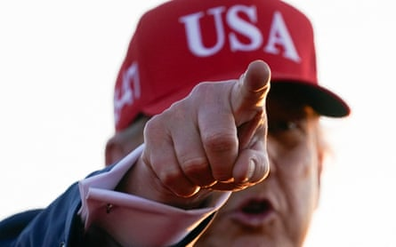
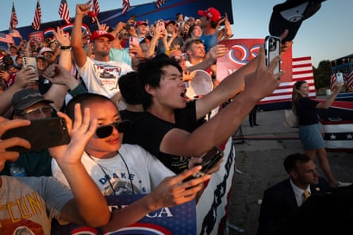
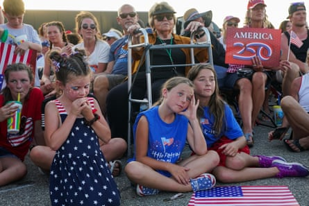
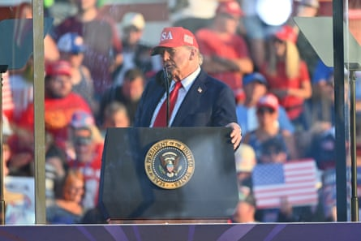

Donald Trump has celebrated the passage of his signature tax and spend legislation by declaring “there could be no better birthday present for America” on the eve of the 4 July holiday.
The US president took a victory lap during an event in Des Moines, Iowa , that was officially billed as the start of a year-long celebration of America’s 250th anniversary, in 2026.
But Trump turned the potentially unifying moment into a campaign-style rally, mocking Joe Biden’s speaking style, repeating his lie of a stolen election and lambasting the “fake news” media. In a policy shift, he said he is willing to let migrant labourers stay in the US if the farmers they work for will vouch for them.
Only after half an hour did he address plans for the semiquincentennial, which he said will include a “Great American State Fair” as well as an Ultimate Fighting Championship (UFC) bout for 25,000 spectators in the grounds of the White House.
Iowa had been described as a “logical choice” for the anniversary launch by Monica Crowley, Trump’s liaison to the organising group, America250 . She said its location in the middle of the country was symbolic of a desire to use the coming celebrations to help bring people together.
But once he arrived in the heartland wearing a red “USA” cap, Trump’s rhetoric proved as divisive as ever as he basked in the glow of his “ One Big Beautiful Bill” narrowly passing in the House of Representatives on Thursday.
Donald Trump gestures at the event hosted by America250.Photograph: Nathan Howard/Reuters
The sweeping legislation permanently extends Trump’s 2017 tax cuts, adds hundreds of billions of dollars in funding for the Pentagon and border security, slashes health insurance and food stamps and phases out clean energy tax credits. It will add nearly $3.3trn to the deficit over a decade, according to the nonpartisan congressional Budget Office.
“There could be no better birthday present for America than the phenomenal victory we achieved just hours ago, when Congress passed the “One Big Beautiful Bill” to make America great again,” Trump told a crowd at the state fairgrounds, in a car park that was far from full.
As he championed the bill’s impact on estate taxes, Trump referred to bankers who exploit their clients as “shylocks” , a term the Anti-Defamation League has called an antisemitic stereotype. Biden apologised after using the word in 2014 when he was vice-president.
Later Trump claimed he was unaware the word “shylocks” is linked to antisemitism, according to a pool report. “I’ve never heard it that way,” the president told reporters travelling back to Washington. “The meaning of Shylock is somebody that’s a money lender at high rates. You view it differently. I’ve never heard that.”
Democrats say the bill will take food and healthcare from the poor while handing billions to the rich. But Trump complained bitterly that their unified opposition was personal: “Only because they hate Trump. But I hate them too, you know that? I really do. I hate them. I cannot stand them because I really believe they hate our country.”
The president went on to boast, “one-hundred-and-sixty-five days into the Trump administration , America is on a winning streak like, frankly, nobody has ever seen before in the history of the presidency.”
With characteristic brio, he told how an aide called him the greatest president in US history, surpassing George Washington and Abraham Lincoln. He touted the recent US strikes on Iranian nuclear facilities , the declining price of eggs, trade deals with Britain and Vietnam and the lower number of migrants crossing the southern border with Mexico.
Supporters cheer as Trump leaves after speaking at the rally.Photograph: Scott Olson/Getty Images
But in a tacit admission that his hardline policy of mass deporations may have overreached, Trump noted there have been some complaints from farmers that their crops are at risk due to a depleted work force.
Addressing his homeland security secretary, Kristi Noem, Trump said: “If a farmer is willing to vouch for these people in some way, Kristi, I think we’re going to have to just say that’s going to be good, right?”
Speaking in a midwestern state where farming is a dominant industry, the president added: “We don’t want to do it where we take all of the workers off the farms.” He said he will also work with the hotel industry on the issue.
A few thousand spectators waited for Trump for hours in temperatures above 90F (32C), wearing Trump paraphernalia, including “Make America Great Again” hats, shirts that said “Ultra Maga” and a stuffed monkey with its own miniature Trump shirt.
Giant TV screens showed images of the founding fathers while the makeshift outdoor arena had 55 national flags flying, including a massive one hanging from a crane. Singer Lee Greenwood greeted Trump with his song “God Bless the USA”.
A recent Gallup poll showed the US is experiencing the widest partisan split in patriotism in more than two decades, with only about a third of Democrats saying they are proud to be American, compared with about nine in 10 Republicans.
Children sit on the ground at the Iowa rally.Photograph: Nathan Howard/Reuters
In a preview of battles to come over historical narratives, Trump promised to open a National Garden of America’s Heroes then alleged: “They took down a lot of our statues. They took down statues of some of the greatest people that we’ve ever had living. I stopped them from taking down Thomas Jefferson … You could imagine who they were going to put up.”
He said the 250th anniversary commemorations would also include a televised “Patriot Games” led by Robert Kennedy Jr for top high school athletes and a national state fair that will begin in Iowa, travel to state fairs across the country and culminate with a festival on the National Mall in Washington.
Most surprisingly, Trump said he is planning to bring the mixed martial arts of UFC to the White House. He has been a regular attendee at UFC fights, counts UFC president Dana White as a close friend and considers fans of the sport part of his political base .
“We’re going to have a UFC fight – think of this – on the grounds of the White House,” Trump said. “We have a lot of land there. We are going to build a little – we are not, Dana is going to do it … We are going to have a UFC fight, championship fight, full fight, like 20-25,000 people, and we are going to do that as part of 250 also.”
During the hour-long address, which ricocheted from topic to topic, Trump heard a sudden bang in the distance. The anniversary of his attempted assassination in Butler, Pennsylvania , is only 10 days away. “It’s only fireworks, I hope,” he said. “Famous last words.”
Trump speaks from behind bulletproof glass in Iowa.Photograph: Anadolu/Getty Images
Unlike a year ago, Trump was speaking from behind thick bulletproof glass. “You always have to think positive,” he said. “I didn’t like that sound either.”
The rally ended with a chorus of “YMCA” and fireworks display in the evening sky. Despite the punishing heat, Trump supporters went home satisfied by the president’s recent run of wins, especially gratified that the “One Big Beautiful Bill’” made it across the finish line.
Ray Seeman, 52, who works for a gas company, said: “I couldn’t believe it. I looked last night and I thought, ‘boy, I don’t know if they can get this pulled off or not’ but I’m glad they did. I haven’t read the whole thing but a lot of stuff that’s tied America down might be getting undone.”
Troy Rector, 53, a government contractor, acknowledged the divisiveness of the bill: “There were some things in there that, no matter which side you’re on as far as politics, a lot of people aren’t going to be happy about. But the majority of the bill is going to help all of America.”
Michelle Coon, 57, a psychotherapist, added: “I had mixed feelings on the BBB but I am glad that it passed so that we continue to have the tax cuts. I used to be in social work and I would see people who are undocumented get lots of free health care that I and other Americans weren’t getting. That was very difficult to see so the idea that they might pull some of that back would be good.”